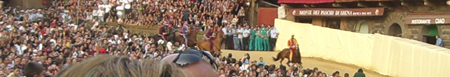
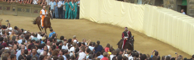

|

Alla Contrada del Nicchio il Masgalano 2009

Il prezioso Masgalano, realizzato da Aldo Agnini e offerto dall'Associazione Costone Ricreatorio Pio II, è stato vinto dalla Contrada del Nicchio.
Questi i punteggi assegnati:
| Classifica |
Contrada |
Punteggio
luglio |
Punteggio
agosto |
Totale |
| |
|
|
|
|
| 1 |
Nicchio |
341,0 |
335,0 |
676,0 |
| 2 |
Giraffa |
337,0 |
338,5 |
675,5 |
| 3 |
Torre |
338,0 |
332,0 |
670,0 |
| 4 |
Bruco |
338,0 |
330,0 |
668,0 |
| 5 |
Drago |
336,0 |
330,0 |
666,0 |
| 6 |
Valdimontone |
328,0 |
324,0 |
652,0 |
| 7 |
Chiocciola |
324,5 |
317,5 |
642,0 |
| 8 |
Pantera |
309,0 |
332,5 |
641,5 |
| 9 |
Oca |
319,0 |
317,0 |
636,0 |
| 10 |
Selva |
320,0 |
315,0 |
635,0 |
| 11 |
Istrice |
306,5 |
323,0 |
629,5 |
| 12 |
Lupa |
295,5 |
326,0 |
621,5 |
| 13 |
Leocorno |
322,0 |
296,0 |
618,0 |
| 14 |
Aquila |
271,0 |
329,5 |
600,5 |
| 15 |
Tartuca |
310,0 |
258,0 |
568,0 |
| 16 |
Onda |
265,5 |
287,0 |
552,5 |
| 17 |
Civetta |
N.C. |
303,0 |
303,0 |
I MASGALANI
I MASGALANI VINTI DAL NICCHIO

Siena si tinge di rosso, nero e bianco
Sarà la Contrada meno popolosa, quella con il territorio più piccolo, ma oggi è la padrona di Siena. La Civetta canta a gloria per un trionfo che mancava dal 4 luglio 1979, quando Francesco Congiu detto Tremoto e Quebel portarono l'ultimo Palio nel Castellare, prima di quello di ieri. Ieri è toccato al cavallo Istriceddu e al fantino Andrea Mari detto Brio regalare ai civettini la gioia dopo tantissimi anni e dare la cuffia alla Lupa.
Dalle ore 9,30 i monturati della Civetta, quasi cento, con il popolo al seguito, stanno sfilando per le strade della città. Tra i cartelli: "Bevo solo con Brio" e i poster dell'arrivo c'è spazio per tutto: il giorno della baldoria e della trasgressione è questo. A fianco del Capitano Paolo Betti e del Priore Carlo Rossi, con il giubbetto della Contrada e jeans c'è Andrea Mari detto Brio, che sta ricevendo i complimenti di tutti.
Presente anche il cavallo Istriceddu, con cappello da barbaresco annesso, per il Giro che dà più soddisfazione ad un proprietario di cavalli.
Un'altra pagina di storia del Palio è stata scritta, oggi è il giorno delle delusioni per quindici rioni e della gioia per uno in particolare: quello della famiglia Tolomei e di Cecco Angiolieri, la più piccola che è diventata la più grande. E non è uno scherzo del destino, ma la regola del Palio.
Il Capitano della Civetta: "Sono sempre stato convinto di vincere"
Esulta il popolo della Contrada del Castellare, esultano il Capitano Paolo Betti insieme al suo predecessore Roberto Papei, che stamani dietro alla Comparsa indossa lo zucchino della vittoria. Perchè ieri sera il Capitano Betti ha calato il drappellone proprio a Papei, segno evidente della grande armonia ritrovata di una Contrada che non vinceva da trenta anni. E che dal 1979 ad oggi ne aveva viste di tutti i colori: nel 1980 la "scuffiata" del Leocorno oltre ad altre sei vittorie della rivale. Dopo l'infortunio di Iesael di luglio tutti avevano pensato ad una sfortuna nera che perseguitava la Contrada di Cecco e di... Bernardo Tolomei. Proprio il Priore Carlo Rossi è stato il primo a ricordare l'operazione di nomina a co-patrono di Bernardo Tolomei insieme a Sant'Antonio: "Era un Palio pieno di segni, in primis il Palio di Bernardo è arrivato a casa. E' la vittoria di un grande popolo che ha saputo superare tantissime difficoltà".
Esulta anche il Capitano Paolo Betti, che non fa altro che elogiare il proprio fantino: "la nostra scelta è stata sempre e soltanto Andrea Mari. Ero convinto di questo ed ero convinto di vincere, come ho ribadito alla Cena della Prova Generale. Adesso vorrei che Brio restasse con noi come fantino di Contrada".
Dello stesso parere anche Andrea Mari: "La vittoria la dedico a me stesso, perchè tutti avete visto il nuovo Andrea. Mi piacerebbe restare come fantino della Civetta".
E adesso, con Cecco Angiolieri da lassù in festa, è nato anche un connubio, quello tra Brio e la Civetta, che ha tutti i connotati di una bellissima storia d'amore. Lottata e sudata sul Campo.
Ha vinto la Civetta

La Civetta con Andrea Mari detto Brio su Istriceddu ha vinto il Palio del 16 agosto 2009.
Trentatreesima grandissima e meritatissima vittoria per il popolo del Castellare che, con una splendida corsa, conquista il Cencio di Giuliano Ghelli dopo trent'anni dall’ultima vittoria, conquistata il 4 luglio 1979 con Francesco Congiu detto Tremoto e Quebel.
Laboriosissima la ricerca dell’allineamento dovuta alla presenza sul tufo di ben otto rivali, pronte a darsi battaglia sul Campo. Molta confusione tra i canapi e continui cambi di posizione tra le Contrade. Il mossiere è costretto a chiamare tutti fuori per ben tre volte e ad invalidare tre mosse, sulla seconda della quale restano molti dubbi. Sarà il Magistrato delle Contrade a riservarsi il giudizio su un mossiere che per ben due volte quest'anno ha suscitato le critiche dei Contradaioli di tutte le Contrade. Nervi tesi anche per i fantini, che vengono richiamati all'ordine con insistenza da Guglielmi di Vulci.
Quando finalmente, dopo circa ottanta minuti, la mossa è valida non è rispettato l'ordine di chiamata ma l'allineamento c'è. Schizza fuori dai canapi la Civetta, seguita da Lupa e Leocorno. E' sempre la Civetta a girare prima a San Martino ed a mantenere la posizione fino al bandierino. Nel frattempo cadono Giovanni Atzeni detto Tittia da Giordhan al primo San Martino e Luca Minisini detto Dè farà lo stesso da Indira Bella al terzo.
Tentativo di rimonta da parte di Luigi Bruschelli detto Trecciolino su Ganosu per la Contrada dell'Istrice al secondo Casato. La Contrada dell'Onda, penalizzata alla mossa, non riesce a partire.
Per la Civetta è festa grande, con pianti di gioia e gli applausi a scena aperta di tutte le altre Contrade, per aver ottenuto sul Campo una grande vittoria tanto attesa da trent'anni.
Ordine di ingresso fra i canapi
Giraffa con Giovanni Atzeni detto Tittia su Giordhan
Onda con Silvano Mulas detto Voglia su Guadalupe
Aquila con Luca Minisini detto Dè su Indira Bella
Civetta con Andrea Mari detto Brio su Istriceddu
Pantera con Giuseppe Zedde detto Gingillo su Giove Deus
Leocorno con Gianluca Mureddu su Lampante
Lupa con Gianluca Fais detto Vittorio su Gammede
Torre con Francesco Caria su Guschione
Istrice con Luigi Bruschelli detto Trecciolino su Ganosu
di rincorsa Chiocciola con Antonio Villella, detto Sgaibarre su Leo Lui
Il video della Carriera

La cuffia passa alla Lupa
Con la vittoria della Civetta la cosidetta "cuffia" passa alla Contrada della Lupa che non vince dal 2 luglio 1989.
CUFFIE
ANNI DI ATTESA
ANNI E GIORNI DALL'ULTIMA VITTORIA
DIGIUNI SUPERIORI AI 30 ANNI
I due fantini esordienti
Gianluca Mureddu si chiamerà: Filuferro.
mentre Francesco Caria: Tremendo.


Gianluca Mureddu e Francesco Caria
GLI ESORDI DEI FANTINI DAL 1763
Alla Torre la Provaccia
Un pò di nervosismo tra i canapi. Parte bene Leocorno seguito da Giraffa e Lupa. Galoppo trattenuto e solo qualche sgambatura per le altre Contrade. Nessuna caduta da registrare.
Il video della Provaccia (in differita)
La Lupa vince la Prova Generale col cavallo scosso
Due cadute nella Prova Generale del Palio dell’Assunta che vede vittorioso il cavallo della Lupa, Gammede, che arriva scosso al bandierino. Alla mossa, maturata subito, è il canape ad intralciare la partenza dei barberi della Pantera e della Lupa. I fantini Gingillo e Vittorio cadono dal proprio cavallo, sembra fortunatamente che non ci siano conseguenze. Il mossiere Guglielmi da Vulci dovrà rivedere ancora qualche meccanismo in vista di domani e ci auguriamo che faccia un'autoanalisi accurata del suo operato. La corsa procede con Giove Deus in testa seguito dall'altro cavallo scosso, Gammede, e dall'Onda con Silvano Mulas detto Voglia su Guadalupe. Altri spunti arrivano dalla Torre e dall'Istrice. Nell'ultimo casato il barbero della Lupa passa in testa e va a vincere al bandierino.
Questo l’ordine d’ingresso tra i canapi:
Chiocciola con Antonio Villella, detto Sgaibarre su Leo Lui
Pantera con Giuseppe Zedde detto Gingillo su Giove Deus
Civetta con Andrea Mari detto Brio su Istriceddu
Torre con Francesco Caria su Guschione
Lupa con Gianluca Fais detto Vittorio su Gammede
Aquila con Luca Minisini detto Dè su Indira Bella
Giraffa con Giovanni Atzeni detto Tittia su Giordhan
Onda con Silvano Mulas detto Voglia su Guadalupe
Istrice con Luigi Bruschelli detto Trecciolino su Ganosu
di rincorsa Leocorno con Gianluca Mureddu su Lampante
Il video della Prova Generale (in differita)
La Chiocciola vince la quarta prova
E' la Chiocciola a vincere la quarta prova del Palio dell'Assunta. Dopo qualche attimo di nervosismo tra i canapi, mossa subito valida. Partono forte Pantera, Civetta e Giraffa, che girano nello stesso ordine a San Martino. Passa poi in testa la Civetta dall'esterno con Brio su Istriceddu, seguita da Chiocciola e Giraffa. All'ultimo Casato è Sgaibarre su Leo Lui a prendere la testa e vincere la corsa.
Questo l'ordine tra i canapi:
Pantera con Giuseppe Zedde detto Gingillo su Giove Deus
Civetta con Andrea Mari detto Brio su Istriceddu
Aquila con Luca Minisini detto Dè su Indira Bella
Torre con Francesco Caria su Guschione
Onda con Silvano Mulas detto Voglia su Guadalupe
Istrice con Luigi Bruschelli detto Trecciolino su Ganosu
Chiocciola con Antonio Villella, detto Sgaibarre su Leo Lui
Giraffa con Giovanni Atzeni detto Tittia su Giordhan
Leocorno con Gianluca Mureddu su Lampante
di rincorsa Lupa con Gianluca Fais detto Vittorio su Gammede
Il video della quarta prova (in differita)
Il Leocorno domina la terza prova, ma vince la Lupa

Sono Vittorio e Gammede per la Lupa a vincere la terza prova del Palio dell’Assunta. Una prova che ha visto come novità sulle monte proprio Gianluca Fais detto Vittorio nella contrada di Vallerozzi al posto di Alessio Migheli detto Girolamo.
Mossa molto buona e tranquilla partono forte Leocorno, Lupa e Giraffa. Mureddu su Lampante domina per quasi tutti e tre i giri, spingendo molto forte il cavallo e andando anche a doppiare le altre Contrade seguito sempre dalla Lupa con Vittorio su Gammede, che poco prima del bandierino, ha la meglio sul Leocorno e conquista la testa.
Nessuna caduta da registrare.
Ecco l’ordine d’ingresso tra i canapi:
Lupa con Gianluca Fais detto Vittorio su Gammede
Leocorno con Gianluca Mureddu su Lampante
Giraffa con Giovanni Atzeni detto Tittia su Giordhan
Chiocciola con Antonio Villella, detto Sgaibarre su Leo Lui
Istrice con Luigi Bruschelli detto Trecciolino su Ganosu
Onda con Silvano Mulas detto Voglia su Guadalupe
Torre con Francesco Caria su Guschione
Aquila con Luca Minisini detto Dè su Indira Bella
Civetta con Andrea Mari detto Brio su Istriceddu
di rincorsa Pantera con Giuseppe Zedde detto Gingillo su Giove Deus
Il video della terza prova (in differita)
La Lupa torna a montare Vittorio
Nella prova di stasera il giubbetto della Lupa sarà indossato da Gianluca Fais detto Vittorio, fantino di Contrada.
La Pantera vince la seconda prova
Tempi di mossa rapidi per questa seconda prova, con un cambio di monta, come indicato sotto. Il cambio di monta della Chiocciola è chiaramente di carattere strategico e bisogna vedere se questo cambiamento porterà alla Contrada di San Marco la svolta decisiva per l'annata paliesca. Alla mossa parte subito bene Giuseppe Zedde, detto Gingillo su Giove Deus, il cavallo viene spinto con le braccia e dimostra di essere ben maturo per la piazza, anche perché è già al suo terzo palio. Bene anche l'Istrice con Luigi Bruschelli, detto Trecciolino su Ganosu, che risponde bene per un giro e mezzo. Il resto del lotto dei cavalli e fantini trotterella senza scoprirsi molto, compreso Antonio Villella, detto Sgaibarre su Leo Lui, cavallo che sulla carta è dato come uno tra i possibili favoriti.
L'ordine di ingresso ai canapi per le prove è stabilito dall'articolo 62 del Regolamento del Palio. Per informazioni, cliccate qui.
Il video della seconda prova (in differita)
Cambio di monta nella Chiocciola
Antonio Villella, detto Sgaibarre sostituisce Alberto Ricceri, detto Salasso su Leo Lui.
La Civetta vince la prima prova

La rincorsa dell'Aquila, con Luca Minisini, detto Dè ed il cavallo Indira Bella ritarda la mossa per ben 20 minuti. Il che fa tornare d'attualità le polemiche dopo la lunghissima mossa dell'ultimo palio di luglio. Qualche scaramuccia all'interno dei canapi tra Alberto Ricceri, detto Salasso nella Chiocciola su Leo Lui e Giuseppe Zedde, detto Gingillo con la Pantera su Giove Deus.
Alla mossa parte bene la Giraffa con Giovanni Atzeni, poi frena subito e prende la testa il Leocorno, con Lampante. Questo cavallo esordiente mostra un bel galoppo per un giro e mezzo, come già avvenuto nelle batterie di stamani, poi al terzo giro il Leocorno viene superato dalla Civetta, con Andrea Mari, detto Brio e Istriceddu, che conclude la prova vincendo in relax.
L'ordine di ingresso ai canapi per le prove è stabilito dall'articolo 62 del Regolamento del Palio. Per informazioni, cliccate qui.
Il video della prima prova (in differita)
L'assegnazione dei cavalli
 Cliccando sopra il nome del cavallo si aprirà la relativa scheda delle carriere disputate.
Nel caso ciò non avvenga, significa che è la prima presenza in Piazza di quel determinato cavallo. Cliccando sopra il nome del cavallo si aprirà la relativa scheda delle carriere disputate.
Nel caso ciò non avvenga, significa che è la prima presenza in Piazza di quel determinato cavallo.
Il video dell'assegnazione dei cavalli (in differita)
Chi ha vinto le batterie
- Prima batteria vinta da Leo Lui con Chiti. Si profila l'esclusione di Già del Menhir e Fedora da parte dei capitani
- La seconda batteria dominata da Fiore di Petraulpu. Un'ottima partenza.
- Flober vince una terza batteria molto combattuta, bene anche Ganosu e Guschione.
- Andrea Coghe cade da Già del Menhir al secondo Casato nella batteria vinta da Guadalupe.
- Vince Lampante con Alessio Migheli la quinta batteria. Bene anche Genoma con Argomenni.
- Giosuè Carboni su Guess vince batteria di recupero.
- Tutte le batterie sono state vinte da chi è partito in testa.

Batteria di recupero: vince Guess
Mossa non valida seguita da una partenza molto forte di Guess con Gosuè Carboni superato al primo San Martino da Paride De Mauro su Indira Bella. Riprende la testa Guess che la mantiene fino alla fine della corsa incalzato da Martin Ballesteros con Giostreddu che arriva al bandierino in seconda posizione seguito da Giordhan montato da Antonio Villella. In questa batteria tutti i fantini hanno provato i cavalli con un galloppo sostenuto.
Questa la composizione della batteria di recupero:
4 Giostreddu - Martin Ballesteros
30 Ganosu - Alessio Migheli
16 Guess - Giusuè Carboni
18 Indira Bella - Paride De Mauro
25 Giordhan - Antonio Villella
19 Dovyzia - Dino Pes
di rincorsa 29 Legale - Riccardo Tuffu
Quinta batteria: vince Lampante
Vince Lampante con Alessio Migheli la quinta batteria di selezione. Ottima prestazione anche per Igor Argomenni che spinge Genoma fino a prendere la seconda posizione, dopo aver superato Indira Bella con Paride De Mauro. Buona la partenza per i cavalli posizionati nella parte bassa del canape. Galoppo sostenuto per gli altri e nessuna caduta da registrare.
Decisa la batteria di recupero
Questa la composizione della quinta batteria:
8 GIOVE DEUS - Giosuè Carboni
18 INDIRA BELLA - Paride De Mauro
29 LEGALE - Dino Pes
1 FEDORA SAURA - Gianluca Mureddu
31 LAMPANTE - Alessio Migheli
di rincorsa 10 GENOMA - Igor Argomenni
Quarta batteria: vince Guadalupe
La mossa matura dopo una prima forzatura al canape con Istriceddu girato. Parte bene lo stesso Istriceddu montato da Alessio Polloni che poi cede la testa della corsa a Guadalupe con Giosuè Carboni che va a vincere. Galoppo sostenuto per Andrea Coghe su Già del Menhir che prova alcune traiettorie e cade al secondo casato. Il cavallo arriverà scosso in seconda posizione.
Buona prestazione per tutti gli altri.
Questa la composizione della quarta batteria:
26 GUADALUPE - Giosuè Carboni
9 ISTRICEDDU - Alessio Pollioni
14 LILLOS - Farris
11 LU MUTU DI GALLURA - Gianluca Mureddu
3 ITALIANA DE SEDINI - Claudio Bandini
di rincorsa 20 GIA' DEL MENHIR - Andrea Coghe
Terza batteria: vince Flober
Forzatura dei cavalli al canape e prima mossa non valida. Ottima partenza per Flober montato da Luca Veneri che gira primo a San Martino lasciandosi subito alle spalle Ganosu con Alessio Migheli. Galoppo incalzante per Guschione che dall'estrno prova a superare Flober. Tra i cavalli che lottano per la testa di una batteria piuttosto combattuta anche Derriu Junior montato da Igor Argomenni. Ottimi gli spunti offerti da questa corsa.
Questa la composizione della terza batteria::
21 LORIONE - Dino Pes
30 GANOSU - Alessio Migheli
24 DERRIU JUNIOR - Igor Argomenni
22 LARDO' - Riccardo Tuffu
5 FLOBER - Luca Veneri
13 GUSCHIONE - Antonio Siri
di rincorsa 32 LOVE COUTRY - Federico Sanna
Seconda batteria: vince a Fiore De Pedra Ulpu
E’ Fiore de Pedra Ulpu montato da Walter Pusceddu a vincere la seconda batteria di selezione del Palio del 16 agosto 2009. La mossa matura subito con Pusceddu che gira primo a San Martino incalzato da Martin Ballesteros con Giostreddu e Andrea Farris su Incantado. Buona prestazione di Indianos anche se le posizioni restano invariate fino alla fine della corsa. Nessuna caduta da registrare.
Questa la composizione della seconda batteria:
33 INDIANOS - Giosuè Carboni
17 GAMMEDE - Alessio Pollioni
7 FIORE DE PEDRA ULPU - Walter Pusceddu
25 GIORDHAN - Antonio Villella
12 INCANTADO - Andra Farris
4 GIOSTREDDU - Martin Ballesteros
di rincorsa 2 IUBA - Gianluca Mureddu
Prima batteria: vince Leo Lui
Dopo una mossa non valida, parte bene Leo Lui con Alessandro Chiti, segue Grido di Gallura con Alessio Migheli. Buon galoppo per tutti. Piccolo contatto tra Dovyzia e Far West che mantiene un'ottima andatura per tutta la corsa. Primo al bandierino in questa prima batteria Alessandro Chiti su Leo Lui.
Nessuna caduta da registrare.
Questa la composizione della prima batteria:
28 FAR WEST - Gianluca Mureddu
19 DOVYZIA Dino Pes
16 GUESS - Giosuè Carboni
6 LEO LUI - Chiti
27 GRIDO DI GALLURA - Alessio Migheli
23 LAMENTOSU - Riccardo Tuffu
di rincorsa 15 FRORIA - Mirko Verdigi
Il video delle batterie (in differita)
Gli invitati dal Comune
Tra gli ospiti invitati dal Comune di Siena, informa una nota, gli ambasciatori di Messico, Jorge Chen, e Cipro Athena Mavronicola, oltre a Friso Van Oranje Nassau, principe ereditario del Regno Olandese, accompagnato dalla moglie, Principessa Mabel Wisse Smith (nella foto).
Fonte: www.adnkronos.com
|  |
I 33 cavalli ammessi alla tratta
Questo l'elenco dei 33 cavalli ammessi alla tratta:
N.B.: I cavalli che hanno già corso il Palio in passato sono linkati alle relative schede (cliccare sopra al nome del cavallo per aprire la sua scheda).
DERRIU JUNIOR
DOVIZYA
FAR WEST
FEDORA SAURA
FIORE DE PEDRA ULPU
FLOBER
FRORIA
GAMMEDE
GANOSU
GENOMA
GIA' DEL MENHIR
GIORDHAN
GIOSTREDDU
GIOVE DEUS
GRIDU DI GALLURA
GUADALUPE
GUESS
GUSCHIONE
INCANTADO
INDIANOS
INDIRA BELLA
ISTRICEDDU
ITALIANA DE SEDINI
IUBA
LAMENTOSU
LAMPANATE
LARDO'
LEGALE
LEO LUI
LILLOS
LORIONE
LOVE COUTRY
LU MUTU DI GALLURA
Le prove di notte
Le prove di notte sono teatro di fantini insoliti, non solo di chi spera di correre un giorno il Palio.
Si presenta così il figlio di Trecciolino, Enrico Bruschelli, che fa la sua apparizione su Misteriosu.
Incredibile, per postura, la somiglianza con il babbo: c'è tutto il diritto di sostenere che il futuro è già iniziato. Alla fine dei giochi, per l'ultima batteria, quando il sole è già alto, appare su Mafiosu Salvatore Ladu detto Cianchino. Una gioia per gli occhi dei nostalgici.
Nel mezzo ci sono le prove di notte che contano, quelle che parlano di 58 presenti e della mancanza misteriosa di Jonathan Bartoletti. Scompiglio infatti non si è presentato all'appuntamento, dando buca non solo di persona ma anche con tutti i suoi cavalli, di cui la sola Giuliana Saura con presupposti da Palio.
Ci sarebbe soprattutto da parlare dei cavalli che piano piano aumentano le proprie speranze di correre il 16 agosto. Perchè il sentore, non solo le chiacchere, è che tra i protagonisti dell'alba del 12 mattina ci posano essere ben cinque o sei protagonisti la sera del 16.
Per quanto riguarda la cronaca, il primo cavallo a galoppare forte quando ancora il sole non è spuntato è Ganosu, montato da Alessio Migheli. Poi tutti gli altri, che mostrano serio impegno, così come i veterinari hanno richiesto. Due le cadute, tra cui quella rovinosa al Casato di Gianluca Fais da Lardò. Il fantino si rialza zoppicando, in giornata si conosceranno le probabilità per Vittorio di correre il Palio.
Sarà il Palio delle incognite. Alle 18 è prevista la riunione tra i veterinari e i Capitani per decidere i cavalli che domani mattina saranno presentati alla tratta. Si prospetta una riunione rovente, visto che i veterinari alle previsite non hanno utilizzato parole dolci e perchè anche i Capitani hanno qualcosa da chiedere e sostenere. Per questo si andrà oltre alla presenza di Fedora e Già del Menhir nelle discussioni, perchè ci sarà da risolvere un puzzle di quelli da centomila pezzi, visto che oltre alla quantità si cercherà la qualità delle scelte. Con la scappatoia della vecchia strada, quella dei big che non mancheranno alla segnatura di domani, sperando che i troppi grattacapi dei Capitani regalino loro la gioia delle chiarine.
Fonte: www.Sienanews.it
Conferenza stampa
Presso la sede del Magistrato delle Contrade - Via di Città, 36, è convocata per le
Ore 11.30 di venerdì 14 agosto 2009
la
CONFERENZA STAMPA
per illustrare gli interventi RAI per il prossimo Palio di agosto, nonché le modalità delle altre dirette televisive.
Saranno presenti:
Il Rettore del Magistrato delle Contrade
La Presidente e Dirigenti del Consorzio per la Tutela del Palio
Dirigenti e Giornalisti RAI
Il commento alla scelta operata dai veterinari
Fuori Dostoevskij e Elfo di Montalbo. Il responso delle previsite cade come un macigno sulla testa dei Capitani che dovranno scegliere accuratamente un lotto di dieci che dovrano prendere parte al Palio. Perchè se spesso ci si basa sui cavalli che hanno corso, nel mezzogiorno di giovedì la situazione sarà completamente un'altra. Si dovrà pensare e decidere, e non sarà facile.
Sarà un Palio con minimo quattro esordienti, quello di domenica prossima. Perchè la lista degli ammessi alla tratta condanna inevitabilmente i Capitani agli straordinari nella scelta dei soggetti. Ci sono Già del Menhir, Fedora Saura, Istriceddu, Guess, Indira Bella e Giove Deus tra i cavalli che andranno direttamente alla tratta del 13 agosto. Apparentemente un bel lotto. Ma andando a sviscerare i dettagli, emerge un altro elenco di soggetti che potevano essere nelle mire del Palio e che invece non ci saranno: Dotoevskij, Choci, Ilon, Iolao, Elfo di Montalbo, Elimia, Estremo Oriente, Gezabele, Iada e Insomma sono quelli che hanno già corso almeno un Palio. Aggiungendo Giordhan che farà la notte, sono undici i cavalli bocciati, chi per un verso chi per un altro, che potevano mettersi di nuovo in mostra.
Dei 61 cavalli che sono stati ammessi alle prove di notte, soltanto 38 sono in età di correre il Palio. Invece che, come da previsione, il trenta percento di esclusioni, c'è stato praticamente un dimezzamento dell'elenco generale. La scelta così per i Capitani si riduce, non certo qualitativamente però. Sarà il Palio degli esordienti, ovvero delle "brenne" degli anni 2000. E anche le possibilità di presenza di Già del Menhir e Fedora Saura al canape si riducono ulteriormente, visto il Palio delle rivali e le incognite che potrebbero presentarsi con tanti cavalli nuovi in Piazza.
Fonte: www.Sienanews.it
Presentato il drappellone del pittore Giuliano Ghelli
Applausi per il drappellone dedicato alla Madonna assunta in cielo e che celebra la santificazione di Bernardo Tolomei.
E' un Palio che apre le porte ad una giostra inimmaginabile. I cavalli simili a quelli di Leonardo da Vinci e tutte le Contrade a guardare, protagoniste della corsa dei colori. L'arcobaleno che fa capolino, perchè simbolo di felicità e di tempesta passata. E' questo il drappellone di Giuliano Ghelli, fiorentino di nascita ma senese per passione. E' lo stesso Autore a confessarlo: "Parte della mia famiglia è di Siena - ha detto Ghelli - e da piccolo invidiavo i bambini che giocavano con i barberi, che erano pù colorati dei tappini".
A guardare tutti i segni del Palio, emergono con chiarezza i simboli di Torre, Chiocciola e Pantera. San Marco per il complesso di colori, dall'ocra al rosso al celeste; Stalloreggi per i bordi celesti che si accoppiano al rosso centrale; Salicotto perchè il Palio si snoda intorno ad una "T" di colore rosso immensa.
Non si possono lamentare neanche Istrice e Onda, visto che i cavalli rappresentati sono cinque (il numero di Camollia) e che su di un cavallo c'è una piccola onda bianca e celeste. Segni, immagini che saranno frequenti nei sogni e nei desideri notturni e non solo dei senesi nei giorni che ci separano dal 16 agosto.
Dopo la presentazione del Palio, Ghelli espone: "E' un drappellone che rispecchia la mia arte e il mio modo di lavorare. Ho provato e riprovato i vari materiali di pittura perchè i contradaioi non lo sciupino al momento della calata dopo la vittoria. E San Bernardo è portato su dalla Madonna, in omaggio a tutti i senesi". Un omaggio che renderà orgoglioso solo il vincitore.

RECENSIONE DETTAGLIATA DEL DRAPPELLONE
BIOGRAFIA DEL PITTORE
I sei cavalli ammessi direttamente alla Tratta di giovedì
N.B.: Poiché questi sei cavalli hanno già tutti corso il Palio in passato, essi sono linkati alle relative schede (cliccare sopra al nome del cavallo per aprire la sua scheda).
N° CAVALLO - PROPRIETARIO
1 FEDORA SAURA - Augusto Posta
2 GIA' DEL MENHIR - Massimo Coghe
3 GIOVE DEUS - Nicola Sandroni
4 GUESS - Fabio Romanelli
5 INDIRA BELLA - Fabio Fioravanti
6 ISTRICEDDU - Serena Butteri
Fonte: sito del Comune di Siena
Sono 61 i cavalli che parteciperanno alle prove mattutine di mercoledì
Elenco dei cavalli ammessi alle prove mattutine di addestramento in programma per il 12 agosto 2009.
N.B.: I cavalli che in passato hanno già corso il Palio sono linkati alle relative schede (cliccare sopra al nome del cavallo per aprire la sua scheda).
N° CAVALLO - PROPRIETARIO
1 BONGO BINGO - Giancarlo Rossi
2 CUORE NERO - Antonio Costantino Buzzi
3 DERRIU JUNIOR - Antonio Villella
4 DOVIZYA - Marcello Rosi
5 DWORUS - Giuliano Fanti
6 EAST LIKE - Andrea Mari
7 FAR WEST - Raffaele Bei
8 FIORE DE P.ULPU - Carlo Brocci
9 FLOBER - Luca Veneri
10 FREESBY - Luca Francesconi
11 FRORIA - Federica Luchetti
12 GAMMEDE - Francesco Maria De Mauro
13 GANOSU - Virginia Cannoni
14 GENOMA - Francesco Passalacqua
15 GIORDHAN - Michela Gori
16 GIOSTREDDU - Fabrizio Catocci
17 GIULIANA SAURA - Luca Francesconi
18 GIUNKO - Giordano Mariotti
19 GRIDU DI GALLURA - Roberto Danesi
20 GUADALUPE - Lucia Toto
21 GUERRIERO BAIO - Marcello Roti
22 GUSCHIONE - Simone Berni
23 GYANT - Giacomo Muzzi
24 INCANTADO - Riccardo Piras
25 INDIANOS - Benedetta Gualtieri
26 ISAIA - Alberto Ricceri
27 ITALIANA DE SEDINI - Sonia Catania
28 IUBA - Augusto Posta
29 LAMENTOSU - Massimo Martelli
30 LAMPANTE - Alessandro Bandini
31 LARDO' - Stefano Paccagnini
32 LAZZARIONE - Alessandro Tozzi
33 LEGALE - Silvia Bruni
34 LEO LUI - Marco Ghetty
35 LILLOS - Luca Anselmi
36 LO SPECIALISTA - Fabio Fioravanti
37 LORIONE - Marcello Roti
38 LOVE COUNTRY - Michela Gori
39 LU MUTU DI GALLURA - Niccolino Floris
40 LUCIFERO LEON - Alessandro Chiti
41 MAFIOSU - Marco Pasquetti
42 MALASPINA - Stefano Trochei
43 MAMBO DE BONORVA - Luca Francesconi
44 MAR DEI CORALLI - Luigi Migheli
45 MARIANO PRIMO - Fabio Becatti
46 MARROCULA - Sebastiano Cherchi
47 MASEDU - Dario Colagè
48 MATSONIA - Sergio Mattichi
49 MELCHISEDEK - Luca Francesconi
50 MENTORE DE AIGHENTA - Claudio Bartoletti
51 MEZUS DI GALLURA - Luigi Bruschelli
52 MIGNAR - Massimo Columbu
53 MILENNA - Alberto Ricceri
54 MINOTAURO - Lucrezia Giannelli
55 MISSISSIPPI - Giuseppe Zedde
56 MISTER MELON - Francesco Begani
57 MISTERIOSU - Nicola Sandroni
58 MORESU - Sebastiano Cherchi
59 NATIA DI GALLURA - Luca Veneri
60 NILO - Franco Vittori
61 NON PER CASO - Alessandro De Romanis
Concluse le previsite. I veterinari: "Tuteliamo la Festa"
Nella giornata di oggi c’è stato anche spazio per i veterinari, che hanno parlato delle previsite e di come queste si sono svolte. Per i veterinari ha parlato Marco reitano, che è stato nominato dal Comune e si è preso il compito di parlare per tutti. “Ormai il meccanismo è rodato – ha esordito Reitano - e bisogna ricordare che siamo in quattro, quindi una visita di cinque minuti fatta da tutta l’equipe, vale quasi una da venti minuti. Poi facciamo il prelievo antidoping, il flexing test, le radiografie, abbiamo seguito il cavallo per la preparazione di tutto l’anno: più approfondito di così si potrebbero solo fare accertamenti sul lavoro. Ad agosto abbiamo ripetuto le lastre su alcuni soggetti, o per seguire un filo logico su come si è evoluto un quadro clinico o per verificare dei dubbi. Quindi si può parlare di visite veloci, ma non si può certo dire che siano superficiali”.
Per alcuni cavalli, assicurano i veterinari, possono essere state sufficienti le lastre effettuate a luglio, a cui furono sottoposti tutti i cavalli. E Reitano ha anche una risposta riguardo alle polemiche di visite troppo poco accurate: “I malcontenti rappresentano la piega sbagliata di quello che è il mondo intorno al Palio. Un cavallo può essere soddisfacente, poco soddisfacente o con dubbi. Quando un cavallo appartiene alla prima categoria può anche essere che la commissione abbia sbagliato, ma non vorrei invece che veterinari e maniscalchi vogliano scaricare sulla commissione colpe che non ha e che sono di altri. La commissione non può essere capro espiatorio”. Addirittura, Reitano si spinge oltre, al rapporto con i Capitani: “Questa cosa chiederò di poterla accennare ai Capitani. Se si deve fare il gioco al massacro, finora abbiamo incassato, ma in futuro potremmo dire qualcosa anche noi. Bisogna ricordare che, tutti insieme, siamo qui per tutelare la Festa. Il nostro vuole essere un consiglio, perché se le dirigenze si accaniscono, il popolo recepisce in un certo modo, e noi ci prendiamo le colpe senza poter controbattere e quindi dare modo di farsi un giudizio giusto”. Il riferimento è al caso della Civetta di luglio, per cui c’è anche una specifica: “La Civetta ha incolpato la commissione di aver mandato nella stalla un cavallo rotto, ma all’inizio avevano detto che il cavallo era a posto.”.
Altro punto focale, sarà la richiesta del serio impegno: “Sarà richiesto a pochi cavalli – specifica Reitano - , perché quelli che hanno effettuato il serio impegno a luglio non dovranno ripeterlo. Alcuni dei cavalli che non abbiamo ammesso a luglio, avevano effettuato un serio impegno in maniera minore rispetto ad altri, ma il lotto era così ampio che abbiamo scelto solo i migliori”.
La prima scrematura dei cavalli si aggirerà intorno al trenta per cento degli iscritti, anche se si avrà la certezza soltanto nel primo pomeriggio di domenica.
Nel frattempo, al ceppo sono sfilati gli ultimi cavalli. Con il passaggio di Elfo di Montalbo nella tardissima serata, si può concludere che le previsite non abbiano mostrato assenze illustri. Per eventuali scossoni si aspetta il mezzodì di lunedì, che farà quadrato su tanti dubbi di presenti e assenti alla tratta.
Fonte: www.SienaNews.it
Il resoconto della prima giornata di previsite
Se la mattina è stata piena di eventi, il pomeriggio ha avuto come protagonista assoluto il caldo. Irriconoscibile tra la mattina e la sera l’ambiente del Ceppo, per presenze e clamore delle proposte. Nel pomeriggio, tra i cavalli che hanno già corso il Palio, si sono visti soltanto Estremo Oriente e Choci (al tramonto, con pochissimi contradaioli presenti), come il copione presentava in partenza.
La mattina ha visto Luigi Bruschelli con la sua scuderia al seguito, primo a presentarsi così come a luglio. Poi a ruota Già del Menhir, con Massimo Coghe che ha comandato il cavallo con la voce nella giostra. Per la prime luci dell’alba, il piccolo spettacolo ha raccolto l’attenzione dei presenti. La mattina, nonostante l’alzataccia doverosa per vedere da vicino i big della Piazza, ha visto al Ceppo un discreto pellegrinaggio di contradaioli e addetti ai lavori. Il primo Capitano a farsi vedere è stato Silvano Focardi, insieme a rappresentanti della Torre, dell’Aquila, dell’Onda e del Capitano Luigi Fumi Cambi Gado del Leocorno.
Per Già del Menhir e Dostoevskij, per il quale il suo proprietario Giuseppe Zedde ha assicurato (si potrebbe aggiungere per l’ennesima volta…) che sarà presente, viste permettendo, alle prove di notte e alla tratta. Si potrebbe così aggiungere una punta importante al lotto dei dieci, sia con che senza la presenza di Già del Menhir tra i dieci. La spiegazione di perché il cavallo vincitore di luglio potrebbe non essere scelto dai Capitani, l’ha data Massimo Coghe: “Non lo prenderanno non perché non lo vogliono, ma perché i Capitani non lo vogliono dare agli altri”.
La terza punta della mattinata è stata Fedora Saura, che ha svolto il passaggio dal Ceppo senza sussulti e in tranquillità, prima di essere montata sul van insieme a Iuba.
Il termine della mattinata ha visto l’ultima defezione, dopo quelle dell’alba di Internos, Edolo e Leggenda di Gallura, del pupillo di Antonio Siri, Fantastic Light. Da far notare il cambio di programma che ha visto l’inversione delle presenze di Giunko e Elfo di Montalbo al Ceppo. Il cavallo che a luglio ha corso nella Pantera si presenterà domani in chiusura di operazioni, anziché questa mattina.
Il pomeriggio caldissimo ha registrato pochissime presenze di addetti ai lavori. Grande schiera dei cavalli di Massimo Donatini, presenti nel cuore del pomeriggio di calura intensa. Anche Paride De Mauro ha iniziato a portare la sua nutrita schiera di soggetti, che saranno ben otto. Al tramonto i passaggi di Choci e della scuderia di Mario Savelli.
I lavori riprenderanno domani mattina alle ore 6 e si protrarranno fino alle otto della sera.
Fonte: www.SienaNews.it
Conclusa la prima mattinata di previsite
Si è conclusa la prima mattinata di previsite per il prossimo Palio presso la clinica del Ceppo. Già del Menhir è stato visitato alle ore sette e i cavalli di Luigi Bruschelli ancora prima. Così come a luglio infatti, a passare dal Ceppo saranno per primi i due big della Piazza: prima il fantino con la sua scuderia, poi il due volte vittorioso. Nella matinata di oggi passerà anche Fedora Saura dal Ceppo.
Sono 114 i cavalli che fra oggi e domani saranno visitati. Oggi si lavorerà in maniera intensa per tutta la mattinata per poi riprendere alle cinque del pomeriggio fino al tramonto. Domani stesso lavoro, con i risultati che saranno pubblicati lunedì mattina giorno peraltro della presentazione del Palio, per l'occasione dipinto da Giuliano Ghelli. Tornando invece alle previsite, a differenza di luglio non saranno effettuati su tutti i cavalli le radiografie. Sui soggetti non in odore di Palio infatti saranno svolti solo esami ematochimici. Dei 114 cavalli iscritti alle previsite infatti, soltanto 84 hanno i requisiti necessari per poter essere scelti dai Capitani il 13 mattina.
Gli assenti sono stati quattro: Edolo, Internos, Leggenda di Gallura e Fantastic Light. Per i cambi di programma vociferati prima dell'alba, da far notare che Elfo di Montalbo, che doveva essere presentato questa matina, è stato invertito con Giunko: il cavallo che di luglio ha corso nella Pantera passerà dunque dal Ceppo alle otto di domani sera.
L'attrazione della mattinata è stata la giostra di Già del Menhir, fatta fare dal suo allenatore solo con comandi vocali. Per Già e Dostoevskij sono state effettuati esami radiografici di controllo. Tutto liscio invece per Augusto Posta e i suoi Fedora Saura e Iuba.Dopo la pausa per la colazione, fase di stanca al ceppo, con molte meno presenze rispetto alla prima mattina e pochi cavalli illustri. Spazio per i cavalli di Simone Berni presentati da Antonio Siri Fanè e Guschione, per quest'ultimo effettuate lastre.
I lavori riprenderanno alle ore 17 di questo pomeriggio, fino a concludersi dopo il tramonto di oggi.
Fonte: www.SienaNews.it
Le ultime news
Il cavallo Già del Menhir, di Massimo Coghe, è senza dubbio il cavallo da battere anche per il palio di agosto. Troppo forte è stato l'impatto con la Piazza a luglio, dopo più di un'ora di mossa tirar fuori dal cilindro il record della Piazza è stato qualcosa di fenomenale. Per questo la scusa della manifesta superiorità potrebbe fermare l'escalation di un fenomeno. Ma attenzione, perchè accoppiata a Già del Menhir potrebbe uscire anche Fedora Saura. Perchè ci sono dei Capitani che iniziano a pensare che o vanno fuori in due o non va fuori nessuno. E qualunque scelta i dieci Capitani prenderanno, ci sarà da discutere.
I rientri da luglio. Fattore importante la carriera corsa dai cavalli a luglio. Lo stress psico-fisico di quattro giorni equivale per un cavallo ad un intero campionato di calcio per un calciatore. La fatica di luglio potrebbe non essere stata smaltita da tanti. Non a caso si discusse lo scorso anno di cavalli che potevano correre solo un palio all'anno per l'impegno che la Piazza richiede. Per di più, sia Massimo Coghe che Augusto Posta hanno dichiarato, in forme sottili e diverse, come i propri cavalli abbiano sofferto la corsa di Provenzano. Se soffrono Fedora e Già, figuraimoci gli altri.
Gli esordienti. A luglio i cavalli esordienti hanno fatto apparizioni deludenti. Per questo l'interesse di tutti sarà di irnverdire pesantemente il lotto in maniera tale da poter cercare risorse nuove e imprevedibili, per il presente e per il futuro. I cavalli in odore di tufo ci sono eccome e allora spazio alla gioventù. Con una questione: a quale età è meglio far esordire un cavallo da Palio?
Previsite e Palio. Ora il programma dell'avvicinamento al Palio è molto chiaro. Venerdì inizieranno le previsite, che si protrarranno sabato 8 e domenica 9 mattina. Alle 6 ci saranno le prime apparizioni dei cavalli al ceppo, per concludersi poi alle 8 della sera. Lunedì 10 Giuliano Ghelli dovrà passare il difficile scotto della presentazione de suo drappellone, mentre nel frattempo la commissione veterinaria finirà di valutare i cavalli da mandare alla tratta e quelli da far passare dalle prove di notte. Sono soltanto i preliminari, l'aperitivo di una Festa che sarà per nove Contrade la fine di un sogno chiamato estate.
Fonte: www.SienaNews.it
L'estrazione delle contrade
Sono state estratte: PANTERA, TORRE, AQUILA che vanno ad affiancarsi alle 7 che corrono d'obbligo il
Palio del 16 agosto 2009.

Ecco pertanto le contrade che correranno il Palio dell'Assunta:
GIRAFFA
LEOCORNO
ISTRICE
CIVETTA
ONDA
LUPA
CHIOCCIOLA
PANTERA
TORRE
AQUILA
CAPITOLI INERENTI ALLE ESTRAZIONI:
Chi correrà ad agosto
Le estrazioni
Chi ha corso nel 2000
Le estrazioni nel 2000
I ritardi all'estrazione
Da chi venne estratta
Le stesse triplette
Curiosità sull'estrazione del 31 maggio 2009
Per gli amanti delle statistische:
- questa tripletta di contrade estratte si era già verificata nel luglio 1819 (vinse l' Onda) e nell'
agosto del 1939 (vinse la Torre).
- Il Valdimontone ha interrotto la sua sequenza di 6 estrazioni consecutive.
- Bruco, Nicchio e Selva non correranno mai nel 2009.
- Questa combinazione di 10 partecipanti non si era mai verificata prima di oggi.
- Come in questa occasione, per il Palio di luglio 1992, la Pantera fu estratta dall'Aquila; poi quest'ultima vinse il Palio.
- Anche per il Palio di luglio 1947 la Tartuca estrasse la Torre, che poi vinse.
Confermato Gugliemi per il Palio dedicato alla santificazione di B. Tolomei
Confermato all'unanimità per il Palio di agosto, dedicato alla santificazione di Bernardo Tolomei, il mossiere
Giorgio Guglielmi da Vulci: sarà la sua 12a volta.

I MOSSIERI DAL 1894
LE DEDICHE AI PALII
Le nomine per il Palio di agosto
Oltre alla conferma di Guglielmi di Vulci come mossiere, la Giunta ha nominato i Deputati della Festa, che saranno: Alessandro Del Porro (Selva), Vincenzo Mittica (Valdimontone) e Fabio Papi (Nicchio).
Massimo Falchi (Bruco), Stefano Talucci (Drago) e Lorenzo Tarli (Tartuca) sono stati nominati Ispettori della Pista, mentre Maurizio Meli, Flavio Mocenni e Roberto Saladini saranno i Giudici della Vincita.
Franco Sodi è stato infine nominato Maestro di Campo.
I DEPUTATI DELLA FESTA
GLI ISPETTORI DI PISTA
I GIUDICI DELLA VINCITA
Sarà Giuliano Ghelli a dipingere il drappellone d'agosto
       
A Giuliano Ghelli,
la Giunta Comunale di Siena ha conferito l’incarico di dipingere il Palio dell’Assunta per l’Agosto 2009.
Nato nel 1944, vive a San Casciano Val di Pesa, nel Chianti fiorentino.
(Sopra alcune riproduzioni delle opere dell'artista).
 LA BIOGRAFIA DI GIULIANO GHELLI
LA BIOGRAFIA DI GIULIANO GHELLI
Fedora Saura entra nella storia paliesca: tre volte consecutive di rincorsa
Il Drago è riuscito nell'impresa di raggiungere il record del Leocorno in questo speciale segmento paliesco: ultimi tre Palii disputati sempre di rincorsa. Il Leocorno era stato di rincorsa nell'agosto 1991, luglio e agosto 1993, cioè in tre Palii successivi. Il Drago è stato di rincorsa, sempre nelle ultime tre occasioni, nell'agosto 2007, nell'agosto 2008 e nel luglio 2009; ma, a differenza del Leocorno, vanta un altro primato, presentandosi di rincorsa sempre con Fedora Saura. Per il cavallo è primato assoluto nella storia paliesca.
Polemiche per la mancata diretta della RAI
 |
In merito alla mancata trasmissione in diretta da parte della RAI della Corsa del 2 luglio, il Consorzio per la Tutela del Palio di Siena precisa:
|
• La RAI per motivi che non ci sono stati comunicati ha ritenuto di non procedere, come fatto negli anni scorsi in casi analoghi, a trasferire il segnale ad altra rete RAI al momento di mandare in onda il TG.
• La corsa è stata collocata in coda a detto TG senza una sufficiente informazione agli interessati.
• La trasmissione viene da alcuni anni collocata, per scelta RAI, sul Canale 2 a luglio e sull’1 ad agosto allo scopo di avere uno spazio di circa 60 minuti prima della messa in onda dei telegiornali; tempo ritenuto congruo, come in genere lo è, per non interrompere la diretta.
• E’ un fatto non usuale che le operazioni di partenza si siano protratte per oltre un’ora dal momento dell’uscita dei cavalli dall’Entrone.
• Formalizzeremo nei dovuti modi la protesta nei confronti della dirigenza RAI esprimendo la profonda amarezza delle Istituzioni senesi così come dell’utenza, ricercando inoltre accordi per evitare in futuro il ripetersi dell’increscioso episodio.
Le statistiche sul trionfo della Tartuca
La Tartuca per la prima volta vede vincere un suo Capitano all'esordio: Massimo Sportelli è stato infatti eletto nell'inverno. Chissà se anche a Sportelli riuscirà la doppietta che da Capitano prima di lui è stata raggiunta da Luca Lombardini (1991 e 1994) e Carlo Arezzini (2002 e 2004).
La storia del Novecento della Tartuca infatti è segnata inevitabilmente dal lungo digiuno durato 19 anni: dal 1972 (quando la Contrada vinse con Mirabella e Aceto) al 1991 (luglio, Benito e Cianchino). Dal 1991 incluso, per Castelvecchio questa è la quinta vittoria in 18 anni: una media che a Siena è pari soltanto al Leocorno e che solo il Bruco può vantare più fitta (4 Palii dal 1996). Questo Palio è anche la prima vittoria da Priore di Alessandro Notari.

Seconda vittoria in tre Palii corsi da Già del Menhir. Un record che solo i grandi cavalli del Palio possono vantare: meglio del cavallo di Massimo Coghe hanno fatto solo Panezio, Urbino e Berio, che vinsero due Palii nello stesso anno. Se Già del Menhir risulterà vincitore anche del prossimo Palio in cui sarà in Piazza, sarà eguagliata la straordinaria frequenza di vittorie di Urbino de Ozieri (3 su 4).
Sempre parlando di cavalli, continua la serie negativa per Elfo di Montalbo, che in quattro Palii corsi ancora non ha tagliato per primo il bandierino. Nota sfortunata anche per Fedora Saura e il Drago: tutte e tre le volte che la grigia di Augusto Posta è finita in Camporegio, la Contrada è sempre stata di rincorsa.
Era dall'agosto del 2006 invece che non si correva un Palio in nove.
Per Giuseppe Zedde detto Gingillo, la grande soddisfazione di aver raggiunto le due vittorie che il padre Antonio aveva conseguito in Piazza (agosto 1972 Onda, luglio 1976 Chiocciola). Per il fantino, dieci Palii corsi, due vinti e nessuna caduta: l'esordio fu nell'agosto del 2002 su Attilax nel Bruco. Inoltre, Gingillo entra nell'olimpo del "Palio in famiglia": la famiglia Zedde con quattro trionfi è infatti a tre vittorie dalla famiglia Alessandri (Eletto detto Bazza cinque vittorie, il figlio Massimo due). Decimo Palio corso consecutivamente da Trecciolino e Tittia, mentre è sfumato questo particolare record per Andrea Mari detto Brio.
Elisir andrà in pensione

Articolo tratto dal Corriere di Siena del 4 luglio 2009


|
|